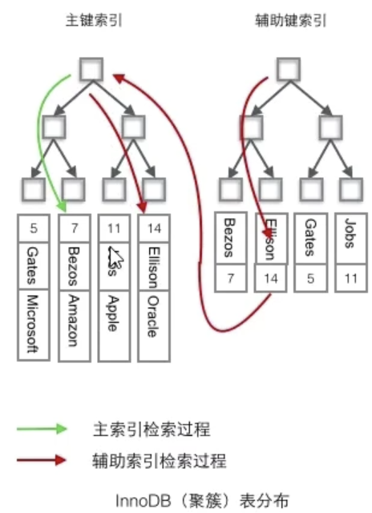

一、什么是index
- 帮助MySQL提高查询效率的数据结构
- 优点：大大加快数据查询速度
- 缺点：①维护索引需要耗费数据库资源；②占用磁盘空间；③对表的数据进行增删改的时候需要维护索引，速度会受到影响。
二、索引分类
- innoDB
- 主键索引：设置为主键的时候，innodb为聚簇索引，不允许有空值
- 单值索引/单列索引/普通索引：一个索引只包含单个列，一个表可以有多个单列索引
- 唯一索引：索引列的值必须唯一，允许有空值，但是只能有一个null
- 复合索引：一个索引包含多个列
- myISAM（不需要背）
- full text全文索引：在定义索引的列上支持值的全文查找，允许空值、重复值，只能在文本类型就行创建
三、索引的基本操作
创建主键索引，在建表的时候自动创建
show index from table创建单值索引：
- 建表的时候创建：添加
key(name)，无法指定索引名字，默认列名为索引名 - 建表之后创建：
create index [name] on table(name)
- 建表的时候创建：添加
创建唯一索引：
- 建表的时候创建：添加
unique(name)，无法指定索引名字，默认列名为索引名 - 建表之后创建：
create unique index [name] on table(name)
- 建表的时候创建：添加
复合索引
建表的时候创建：添加
key(name, age)，无法指定索引名字，默认列名为索引名建表之后创建：
create unique index [name] on table(name,age)Key_name为同一个，都是第一个name
利用复合索引需要符合最左前缀原则；MySQL会动态调整字段顺序以便利用索引
四、innodb引擎底层数据结构
是B+树，是B树的一种优化
- 根据主键索引进行排序，链接起来
- 一页16kb，可以存储多个结点
- 页目录也是16kb：存储每一页第一个结点的索引值和指针（指向每一页）
- 一般3层就是很庞大的数据量了，约10亿数据量
- 根节点常驻内存，一般2
4层，最多13次磁盘IO
五、B-tree和B+tree的区别：
- b-tree的每个节点都需要存储完整的数据
- b+tree只有叶子节点存储数据，可以降低树的高度
六、聚簇索引和非聚簇索引
聚簇索引：将数据存储与索引放到了一起，索引结构的叶子节点保存了行数据。比如主键索引等。
- 默认是主键，如果没有主键，则会选择一个唯一且非空的索引代替；
- 如果这个索引也没有，innodb会隐式定义一个主键来作为聚簇索引；
- 如果已设置了主键为聚簇索引而想要单独设置聚簇索引，必须先删除主键–>添加聚簇索引–>恢复主键。
非聚簇索引：将数据与索引分开存储，索引结构的叶子结点指向了数据对应的位置。比如单列索引等
特点：①在innodb中，一个表中只能有一个聚簇索引，在聚簇索引上创建的索引称之为辅助索引；②非聚簇索引都是辅助索引，比如单列索引、唯一索引、复合索引。③辅助索引的叶子节点存储的不是行的物理位置，而是主键值。④辅助索引访问数据总是需要二次查找。
面试题：为什么辅助索引插入的主键值而不是物理位置？因为增删改的时候需要修改地址，如果非聚簇索引存储的地址，会导致在增删改的时候额外修改索引。